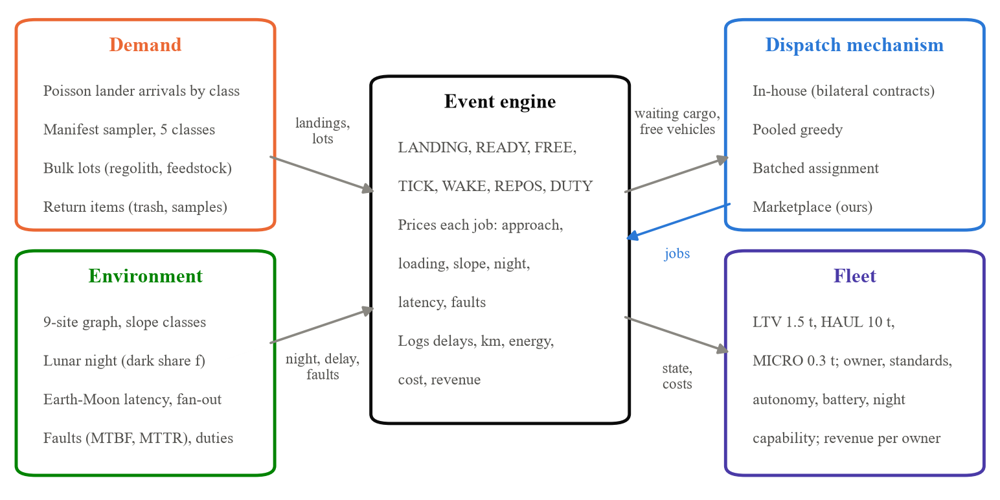
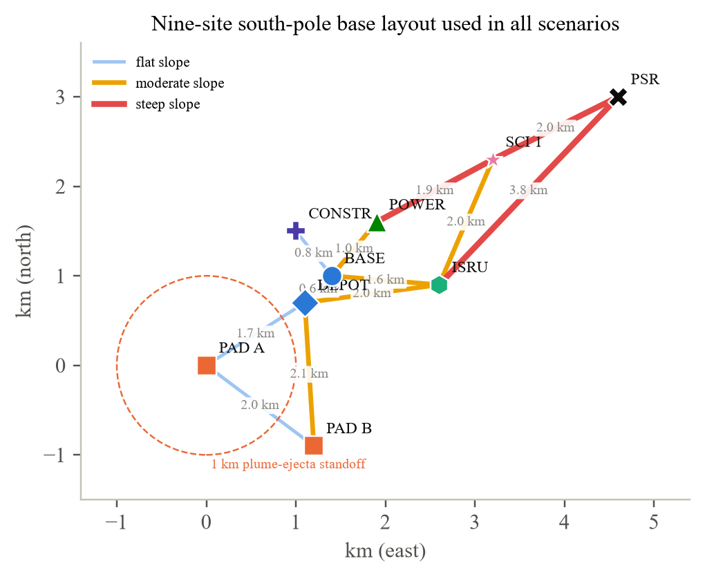
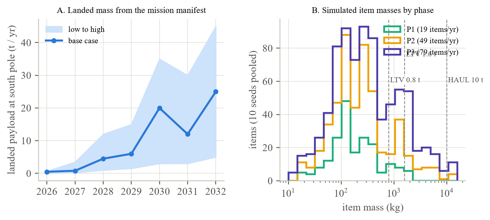

LunarSim is a discrete-event simulation written in Python 3.12 with NumPy; SciPy is optional (used for the assignment baseline when present, with a built-in Hungarian implementation otherwise). Time is measured in hours; a run covers one Earth year of operations. A line-by-line port to JavaScript runs the same model in a browser page and is used both as an interactive tool and as an independent implementation for cross-checking (Section 5.4). This section is a summary ODD description [34]; the full parameter list with sources is in Appendix A, the verification table in Appendix B and the STRESS reporting checklist [35] in Appendix C.
The model exists to compare dispatch rules for a shared pool of rovers that move landed cargo at a south-pole base, under the constraints NASA has published. Three kinds of entity flow through it. Cargo items have a mass, an origin pad, a destination site, a release time (when offloading finishes), a priority class (1 urgent, 2 normal, 3 deferrable), an owner, an interface standard and a class label. Vehicles have an owner, a class (capacity, speed, energy, battery, night capability, team-lift capability, unit cost, design life, fault parameters, handling times), a location, an autonomy level and a set of accepted interface standards. Jobs are what a dispatch rule returns: one or more vehicles, a bundle of items sharing an origin, a visiting order of destinations, and optional backhaul items. A fourth entity, the landing schedule, is known in advance: real landings are published months ahead, and the anticipatory component of the marketplace reads it. Figure 2 shows how the pieces connect.

The base is a nine-site graph on a local tangent plane (Figure 1). Two landing pads sit 1.7 and 2.1 km from a cargo depot beside the habitation zone, satisfying the >1 km ejecta standoff. A power site, a construction and excavation site and an in-situ resource (ISRU) pilot plant lie 0.6–2 km from the base; a science site and a shadowed crater rim (PSR) lie about 3 and 5 km out, matching NASA's 5,000 m aggregation range. Each edge carries a slope class (flat, 0–5°; moderate, 5–10°; steep, 10–20°) that multiplies travel time by 1.0, 1.33 or 2.0 and energy by 1.0, 1.35 or 1.9. Straight-line distances are scaled by a tortuosity factor of 1.3 to represent paths that wind around craters and boulders. Vehicles take shortest-time paths, computed once by Floyd–Warshall.

Landers arrive as independent Poisson processes per class, each landing at a pad drawn when the schedule is generated. CLPS-class landers deliver 100–500 kg (Firefly Blue Ghost, Intuitive Machines Nova-C, Astrobotic Griffin); MK1-class landers deliver 2,000–3,000 kg (Blue Moon MK1); large landers deliver 12,000–30,000 kg (Starship HLS cargo, Blue Moon MK2). Each landing draws a manifest from five cargo classes (Table 2) until the payload mass is used up, with the lander's crane limiting the heaviest single item. Items become available 6–72 h after touchdown depending on lander class, staggered by 15 minutes per item. Three phases scale the cadence to match NASA's totals: Phase 1 (about 5 t/yr of landed cargo, 19 items), Phase 2 (about 30 t/yr, 49 items) and Phase 3 (about 74 t/yr, 79 items). Figure 3 shows the manifest-based landed-mass forecast we assembled from public mission plans and the simulated item-mass distribution by phase.
Two further flows matter for a dispatch rule and are usually omitted. Bulk lots represent regolith moved for berms and shielding and excavated feedstock carried to the ISRU plant; they are released evenly through the year in 500 or 1,000 kg lots as deferrable (priority 3) items. NASA sizes its IPEx excavator demonstration at 10,000 kg of regolith per day [36], so our Phase-2 default of 500 t/yr and Phase-3 default of 1,500 t/yr are deliberately modest; Section 6.7 sweeps 0–3,000 t/yr. Return items represent trash, samples and empty carriers: 30% of outbound items generate a return item of 20–60% of their mass, ready 5–30 days after delivery, bound for a pad. Both are drawn from the demand random stream so that every mechanism sees the same flows.
Table 2. Cargo classes used by the manifest sampler. Masses are uniform within the range; destinations are drawn with the listed weights. Shares are per item for a build-out manifest; the lander's payload and crane limit truncate them.
| Class | Mass (kg) | Destinations (weight) | Priority | Item share | Anchor |
|---|---|---|---|---|---|
| Consumables and spares | 60–400 | BASE 0.8, DEPOT 0.2 | 1 | 0.34 | Logistics carriers; packaging overhead 75–150% [37] |
| Science payloads | 10–150 | SCI 0.5, PSR 0.3, BASE 0.2 | 2 | 0.20 | CLPS payload masses 1–100 kg [38] |
| Equipment and demos | 300–2,000 | CONSTR 0.4, ISRU 0.3, POWER 0.2, BASE 0.1 | 2 | 0.26 | “500-to-2,000 kg” demonstrations [2] |
| Infrastructure | 2,000–6,000 | POWER 0.4, ISRU 0.3, CONSTR 0.3 | 2 | 0.14 | Logistics 2,000–6,000 kg per mission [2] |
| Elements | 6,000–15,000 | BASE 0.6, POWER 0.4 | 3 | 0.06 | Habitats, power units 12,000–15,000 kg [2, 3] |
| Bulk lots (regolith, feedstock) | 500 or 1,000 | CONSTR to BASE / ISRU; PSR to ISRU | 3 | scenario | IPEx 10 t/day [36] |
| Return items | 20–60% of parent | back to the origin pad | 3 | 30% of items | Trash management, sample return [1, 7] |

Lunar night. A synodic month is 708.7 h. A fraction f of each cycle is dark at the base; the default is 0.15 (about 106 h), consistent with 90–94% illumination on the Shackleton rim [39] and NASA's 120-hour darkness survival target [1]. Vehicles without night capability cannot start jobs in the dark; if one is caught out when night begins it hibernates until dawn, and the job is delayed by the whole night. Night-capable vehicles drive at 60% speed in the dark.
Control latency and autonomy. Each vehicle is teleoperated, supervised or autonomous. Round-trip control latency is 2.6 s of light time plus a ground-processing term, 2.4 s by default (RTT 5 s). Teleoperated driving speed interpolates the JSC trial table exactly (3.24, 2.56, 2.03 and 1.76 km/h at 0, 4, 6 and 8 s [29]); beyond 8 s it follows the move-and-wait law v = v8(1 + 8k)/(1 + k·RTT) with k = 0.1 s−1 (a 10 s command segment), which gives a few tens of metres per hour at Mars delays, in line with command-cycle driving on Mars rovers. Speeds are relative to the 6 km/h autonomous average we assume for a 10 km/h-class rover. Teleoperated loading and unloading take (1 + 0.25·RTT) times nominal, fitted to the excavation study [30]. Supervised vehicles drive at 0.9 of autonomous speed with a 1.1 handling factor. Earth operators are a shared resource: a teleoperated vehicle needs one operator for the whole job, a supervised vehicle 1/4 of one (fan-out 4) and an autonomous vehicle 1/20. A job that cannot get its operator waits.
Faults and other duties. Each vehicle fails after an exponentially distributed number of operating hours (mean MTBF 300–500 h by class) and recovers after a fixed MTTR of 12–36 h; this yields 92–96% availability, in the range reported for autonomous mining haulage [40]. Vehicles also spend a share of their time (default 30%) on their owner's other work in 48-hour blocks, reflecting NASA's statement that LTVs serve NASA missions first and may be hired out in between [6].
Energy. Driving energy is 350 Wh/km for an LTV-class rover (an Apollo LRV-derived design value is about 95 Wh/km for a 700 kg vehicle [41]; we scale up for mass and slopes), rising with payload and slope class. A vehicle whose battery cannot cover a job charges first at 5 kW. Energy never binds in the scenarios reported here, so we do not discuss it further.
Three classes (Table 3) span the fleet that is plausible before 2033. The LTV class matches the contracted rovers: 1,500 kg cargo, 10 km/h design speed modelled as a 6 km/h autonomous average, survival but not operation through the night. The 10-tonne hauler does not exist and is our proxy for the “high capacity mobility systems” NASA lists as a partnership priority [1]; its cost is an assumption built from a $200 million vehicle plus 4 t landed at Starship's published $100,000/kg. The small utility rover matches Lunar Outpost's HL-MAPP class. Delivered cost per vehicle combines the vehicle contract with its landing (the Phase-1 LTV task orders were about $220 million each plus about $234 million per Blue Moon MK1 delivery [4]).
Two cost views appear in the results. System cost is the fleet's amortised capital (unit cost over calendar life) plus operator hours at a loaded $1,000 per console hour; divided by delivered mass it gives cost per kilogram moved, and divided by landed cargo alone it gives cost per landed kilogram. Variable job cost, used inside the auction, is the usage-driven share (50%) of a vehicle's per-operating-hour cost plus operator time. Both are assumptions and both are swept in Section 6.10.
Table 3. Vehicle classes. Sources and confidence grades for each entry are in Appendix A.
| Class | Cargo (kg) | Speed, autonomous (km/h) | Night ops | Team lift | Delivered cost ($M) | Life (yr) | MTBF / MTTR (h) | Load / unload (h) |
|---|---|---|---|---|---|---|---|---|
| LTV (Astrolab, Lunar Outpost class) | 1,500 | 6.0 | no | yes | 450 | 10 | 500 / 24 | 0.5 / 0.5 |
| HAUL (proposed heavy hauler) | 10,000 | 4.0 | yes | yes | 600 | 10 | 400 / 36 | 1.5 / 1.5 |
| MICRO (HL-MAPP class) | 300 | 3.0 | no | no | 60 | 5 | 300 / 12 | 0.3 / 0.3 |
The engine keeps an event heap ordered by time and insertion sequence. Landing events create manifests and schedule READY events; READY, FREE (a vehicle finishes), NIGHT_END, WAKE (two reminders before each published landing, and a timer when bulk lots are held) and REPOS (a scheduled staging move) events trigger a dispatch call for event-driven mechanisms; batched mechanisms act only at TICK events. When a mechanism returns jobs, the engine computes each job's duration from the slowest vehicle's approach, team set-up (1 h), handling, loaded legs, backhaul legs and charging, then adds fault recovery and night hibernation where they apply, and books operators. Delivery times for intermediate stops are interpolated along the job. The engine logs, per run, delivered and stranded mass, delays by priority and class, trips, bundled trips, team lifts, backhaul mass, repositioning moves, kilometres and empty kilometres, energy, utilisation, operator hours, faults, night strandings, costs and revenue per owner; with tracing on, it also records every vehicle movement for replay. An item is stranded if no vehicle in the fleet, or no feasible team of up to three team-capable vehicles when the mechanism supports teams, can ever carry it.
All four mechanisms see the same information at dispatch time: the waiting items that are ready and not stranded, the vehicles that are free, alive, not on other duty and able to operate in the current lighting, and the published landing schedule. None sees future cargo masses.
In-house fleets (status quo). Every cargo owner is served by one contracted carrier: itself if it owns vehicles, otherwise a carrier assigned round-robin at the start. The carrier serves its customers' oldest item first with its nearest feasible vehicle, one item per trip. This is bilateral contracting as practised in CLPS and the LTV task orders.
Pooled greedy. Identical to in-house except that every vehicle may serve every item. This is the “closest driver” rule of ride-hailing and the simplest thing a marketplace could do.
Batched assignment. Every hour, solve a minimum-cost assignment (Hungarian algorithm [42]) between free vehicles and waiting items, with cost equal to the single-item job duration minus a small age credit so that old items are not starved. One item per vehicle. This is Uber-style batched matching and is optimal within each batch.
Marketplace (ours). Algorithm 1 gives the clearing rule. It differs from pooled greedy in seven ways, each of which Section 6.8 removes in turn. (i) Team lift. Items heavier than any free vehicle are assigned first to the smallest team of two or three team-capable vehicles whose capacities sum to the item's mass; the team couples at the pad (1 h), drives at half speed and shares the job. (ii) Generalised-cost bids. For every (vehicle, item) pair the vehicle bids its variable cost for the job plus the shippers' value of the delivery time, minus an urgency credit for priority and waiting age; the globally lowest bid wins, and the auction repeats on the remaining pool (the SSI structure of [22]). (iii) Bundling. Before bidding, a vehicle greedily adds waiting items from the same pad while capacity allows and the detour costs less than 80% of a separate trip would; up to four distinct destinations are visited in shortest order. (iv) Consolidation. Deferrable bulk lots on a lane are held back until they would fill 70% of the best available vehicle or the oldest has waited 24 h, whichever comes first; a wake-up event guarantees release. (v) Backhaul. A vehicle finishing at a site loads any waiting return items there that fit and are bound for a pad. (vi) Night awareness. A vehicle without night capability refuses a job it could not finish before dark. (vii) Anticipatory staging. When a landing is due within 48 h and no vehicle is at or heading to its pad, an idle vehicle that the auction did not need is sent so that it arrives one hour before offloading can finish; staging never pre-empts waiting cargo and never sends a vehicle that would be caught by the night.
Here h(v,B) is the job duration for vehicle v carrying bundle B from the current state, cu the per-operating-hour cost of vehicle u, ω = 0.5 the usage-driven wear share, ou the operator demand (1, 1/4 or 1/20), pop = $1,000/h, VOT(q) the value of delivery time by priority class ($5,000, $1,000 and $100 per hour), hi the time at which item i is dropped, ri its release time, w1 = 6 h, w2 = 2 h, w3 = 0, wage = 0.08 h per hour waited, and u = $2,000 per hour of credit. Section 6.9 searches over w1, w2, wage and the consolidation thresholds.
Every job is paid at its bid-side variable cost, so revenue by owner is a by-product of the run; we use it only to report how evenly a pooled market spreads work across owners (Gini coefficient of revenue). A full treatment of payments, gain sharing and incentive compatibility is outside this paper; Section 7 places it in the reference design.
Scenarios. Table 4 lists the fourteen experiment suites. Each is built from the three phases by changing one or two factors. Phase 2 (2029–2032, about 30 t/yr landed plus 500 t/yr of bulk lots) is the central case because it is the first period with enough cargo and enough vehicles for dispatch to matter and the period NASA has earmarked for logistics build-out.
Replications and variance reduction. Every cell is run with 30 seeds (20 in the latency suite, which has 54 cells). The demand stream (landings, pads, manifests, bulk lots, return items) and the operations stream (faults, duty blocks) are separate generators seeded from the cell seed, so for a given seed every mechanism faces the same cargo and the same fault history: common random numbers. We report means with 95% confidence intervals (1.96 standard errors) across seeds and, for mechanism comparisons, paired differences with their own intervals. A one-year horizon starts from an empty base; because landers arrive within days and the backlog never accumulates across lunar cycles in the reported cells, we do not discard a warm-up period.
Metrics. The primary metric is the 90th-percentile delay of urgent (priority 1) items from release to delivery, with the share of urgent items delivered within 24 h as its service-level form. Secondary metrics: delivered share of mass, immovable share of landed cargo mass, delay by cargo class, trips per year, bundled trips, team lifts, repositioning moves, backhaul mass, empty-kilometre share, utilisation, operator hours, faults, night strandings, system cost per kilogram and revenue Gini. Delay of deferrable bulk lots is reported separately because the marketplace delays them on purpose.
Tuning. The marketplace's hand-set weights were chosen once from a three-seed pilot and then frozen. Section 6.9 reports a random search of 40 weight configurations on Phase 2 with eight seeds and tests the winner on all phases with 30 fresh seeds. The baselines have one tunable each (the batching window and the age credit of batched assignment); we report the batching sweep in Section 6.8 and fixed the age credit at its pilot value.
Thirteen checks compare the simulator with something it did not produce (Appendix B, Table B1). Four are kinematic and structural identities: travel time on a flat path equals distance over speed; a steep edge doubles travel time; the dark share of simulated time equals the night parameter; the annual fleet charge equals the sum of unit costs over calendar lives. Four reproduce the measured teleoperation speeds at 0, 4, 6 and 8 s round-trip delay [29] to within 1%. Two are conservation identities under two different mechanisms: ready mass equals delivered plus stranded plus backlog mass to machine precision. One checks the stranding rule: in six large landings with a two-LTV fleet, no item heavier than the 3,000 kg team limit is ever delivered. One checks common random numbers: four mechanisms run on the same seed see an identical landed manifest. The last and most demanding check is a queueing reference: with one autonomous rover, no night, no faults, Poisson single-item arrivals and a fixed destination, the simulated mean wait in queue must match the Pollaczek–Khinchine M/G/1 formula Wq = λE[S²]/(2(1−ρ)). Over 18,000 items it agrees to 0.5%. All thirteen pass, with a maximum relative error of 0.5% and all but one at or below 0.03%. The same checks are implemented in the browser version and can be run by the reader.
Where no formula exists we compare behaviour with published anchors. Pooling gains in collaborative road and forest logistics are 5–30% of cost [8–10]; our pooled-versus-in-house gains in urgent delay are larger than that band when fleets are fragmented and zero when they are not, which the thickness literature predicts [11, 13]. Autonomous haulage availability of 88–95% [40] brackets our 92–96%. Earth truckload deadhead is 16–21% [27]; ours is about 50% because almost all lunar cargo flows one way, a structural difference we expected and discuss in Section 6.1. The lunar night's effect, a whole-night loss whenever a non-night-capable vehicle is caught out, matches the operational logic in NASA's survival targets [1].
Thirty replications give confidence intervals of about ±15% on mean urgent delay and ±40% on its 90th percentile for a single cell, which is enough to rank mechanisms with paired differences but not to quote a single number to a decimal. For the four Phase-2 default-fleet cells we therefore ran the sequential procedure of Hoad, Robinson and Davies [59]: add replications in blocks of 100 until the 99% confidence interval of the mean urgent delay, the same-day service level, the delivered share and the cost per kilogram are each within 1% of their means, and the 90th-percentile delay within 5%, up to a cap of 4,000 replications; the mean urgent delay had not settled at the cap, so a second run continued each cell in blocks of 500 with the cap raised to 60,000, which no cell needed. Section 6.14 reports the replications needed and the settled estimates; the headline Phase-2 numbers in this paper are quoted from those runs.
The browser version of the model is an independent implementation in a different language with a different random-number generator. On the Phase-2 default-fleet cells (four mechanisms, six metrics, 30 seeds each), every one of the 24 metric means lies within the combined 95% confidence intervals of the two implementations. Agreement of this kind does not prove either implementation right, but it rules out the class of bugs that a single implementation hides from itself.
Compute. All runs were made on a 12-core desktop under Windows 11. One simulated year takes 0.1–3 s depending on demand; the fourteen suites, about 8,000 runs plus the sequential-replication runs, took about 40 minutes on 10 worker processes. Discarded preliminary runs during development amounted to a few thousand.
Table 4. Experiment suites. Fleets are listed as owner:class; LTVs are supervised, haulers supervised or autonomous, the small rover teleoperated unless stated.
| Suite | Question | Factors and levels | Mechanisms | Cells × seeds |
|---|---|---|---|---|
| E1 Phases | Main comparison | Phase 1 (3 vehicles), 2 (6), 3 (9) default fleets; plus an unconstrained 16-vehicle autonomous fleet as a bound | all four + bound | 15 × 30 |
| E2 Fleet size | Minimum fleet for service level | Phase-2 demand; fleets of 2, 3, 4, 5, 6, 8 vehicles | all four | 24 × 30 |
| E3 Thickness | Pooling gain vs fragmentation | 6 vehicles split among 1, 2, 3, 4, 6 owners; other-duty share 0, 0.3, 0.6 | in-house, marketplace | 30 × 30 |
| E4 Heavy cargo | The capability gap | Phases 2 and 3; fleets of 4 LTVs, 3 LTVs + 1 hauler, 2 LTVs + 2 haulers | greedy, marketplace, marketplace without team lift | 18 × 30 |
| E5 Autonomy and latency | Throughput bounds | All-teleop, all-supervised, all-autonomous 5-vehicle fleets; RTT 2.6, 5, 8, 16, 603, 1,323 s; 1, 2, 4 operators | marketplace | 54 × 20 |
| E6 Standards | Interface compatibility | Share of cargo on the common standard 0.5, 0.75, 0.9, 1.0; 3 of 5 vehicles accept only the common standard | in-house, greedy, marketplace | 12 × 30 |
| E7 Environment | Robustness | Dark share 0.1–0.5; MTBF ×0.25–×2; bulk 0–3,000 t/yr | greedy, marketplace | 24 × 30 |
| E8 Ablations | Which components matter | Each of seven components removed; batching window 0, 0.5, 1, 2, 6 h; Phases 2 and 3 with tight fleets | marketplace variants | 24 × 30 |
| E9 Tuning | Do tuned weights transfer? | 40 random weight configurations on Phase 2 (8 seeds); best vs hand-set on Phases 1–3 (30 seeds) | marketplace | 41 × 8 + 6 × 30 |
| E10 Economics | Cost drivers | Demand ×0.5/×1.5; operator cost; other duty; dark share; MTBF; plus analytic vehicle cost and life | marketplace | 11 × 30 |
| E11 Anticipation | Does staging before landings help? | Phases 1–3 tight fleets; Phase 2 with 2 and 3 vehicles | marketplace with and without anticipation | 10 × 30 |
| E12 Capacity ladder | What capacity moves the manifest? | 300 manifest-years per phase; capacities 300–30,000 kg | manifest analysis, no dispatch | 3 × 300 |
| E13 Fragmentation law | Does in-house service depend only on vehicles per owner? | Fleets of 4, 6, 8 LTVs; 1–8 owners; duty 0, 0.3, 0.6 | in-house, marketplace | 90 × 30 |
| E14 Precision | Replicate until settled | Phase-2 default fleet; 99% CI within 1% (5% for p90) | all four | sequential; 4,000 cap, then extended to the 1% target |